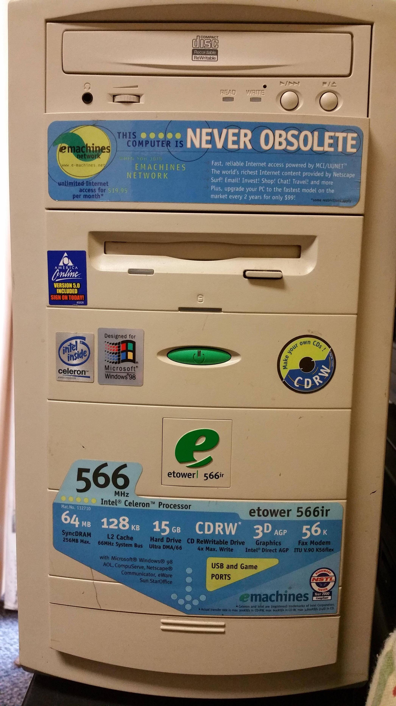
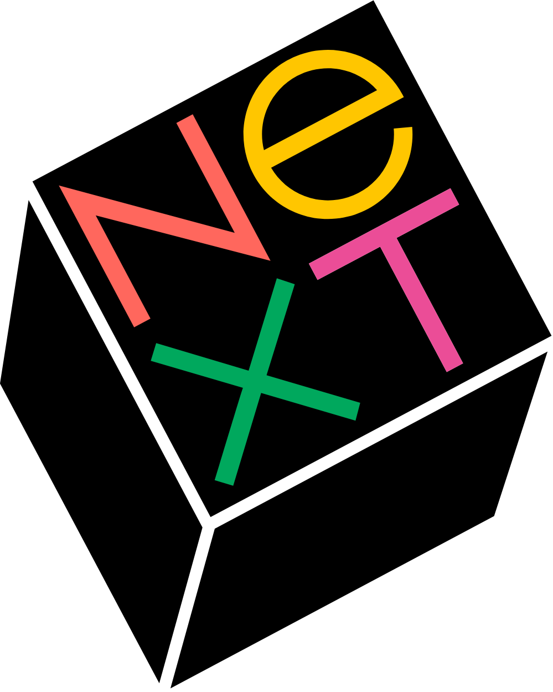

PORTFOLIO PAUL SICOLI

Chers membres du jury. J’ai l’immense plaisir de vous accueillir sur ce site internet qui représente le résultat de ma montée en compétences durant ces deux dernières années d’études en BTS SIO SLAM. Vous pourrez consulter au cours de votre visite l’intégralité des documents indispensables au passage de cet examen ainsi que des éléments additionnels sur mon parcours et mon évolution. Vous retrouverez également les mentions légales de ce site ainsi qu’un bouton pour me contacter directement dans le footer de cette page. Je vous souhaite de passer un agréable moment sur ce support qui a été conçu avec l’objectif d’avoir la navigation la plus intuitive possible.
INSPIRATIONS
Ce portfolio est intégralement développé en HTML et en CSS natif pour les micro-interactions, dans le but de décharger au maximum le thread principal du navigateur. En effet, Bootstrap n’a pas été utilisé et aucun JavaScript n’est requis. Ceci assure un chargement rapide des pages et une fluidité optimale pour les visiteurs. Le tout est enveloppé dans une palette de couleurs et une esthétique générale venant rappeler l’écosystème numérique des années 90, une décennie charnière dans le monde de l’informatique avec l’accès à internet qui devient enfin disponible pour le grand public.

< Hardware À cette époque, IBM et les constructeurs de matériel informatique avaient choisi le beige pour des questions d’ergonomie, afin de réduire la fatigue oculaire des employés de bureau en lissant le contraste entre les feuilles de papier blanc et les écrans d’ordinateur. Il faudra attendre la sortie de l’iMac d’Apple en 1998 pour que cette tendance soit brisée.

< Software Les interfaces en ligne de commande étaient adorées des développeurs mais peu attrayantes pour le commun des mortels. Apple changera la donne avec l’évangélisation de l’interface graphique, puis Microsoft la démocratisera. Steve Jobs, par le biais de son système d’exploitation NeXTSTEP ancrera à jamais l'élégance de l'orienté objet dans nos standards d'interaction numérique.